Consumption
Analytics
HPE GreenLake’s Consumption Analytics — a modular chart system for tracking and forecasting enterprise cloud spend.
Project at a Glance
In summer 2023 I joined the HPE GreenLake Cloud Platform team as a UX Design Intern, working on Consumption Analytics — the product enterprise teams use to track and forecast their cloud spend. My work centered on the dashboard’s customization features. The ask was open‑ended: users had said they wanted to “customize their dashboards,” and no one had defined what that should mean. Over 14 weeks I went from competitive research to a high‑fidelity, modular chart system — narrowing a sprawling wish‑list through three rounds of UX critique, working alongside a UI developer, a product manager, a UX researcher, and a fellow designer.
What is
Consumption Analytics?
HPE GreenLake Consumption Analytics helps organizations monitor and manage how they use IT resources and services — surfacing usage patterns, resource allocation, and cost efficiency. Picture the user: a system administrator at a medium‑sized IT company who wants to optimize resource usage, cut costs, and find the soft spots across their infrastructure. The product already existed and had traction — my job wasn’t to invent it, but to make it bend to how each admin actually reads their data.
14 weeks,
five phases
Research up front, three iteration rounds in the middle — each gated by a UX critique — then a final demo and a handoff to usability testing.
An NDA internship project. Consumption Analytics is a proprietary HPE GreenLake product — the screens below are intern explorations, the data shown is illustrative, and only a slice of the work is shared here.
Learn from everyone
else first
I led the research. The goal was simple to say and hard to do: understand how chart customization is handled both by our competitors and inside HPE’s own products, then turn earlier usability findings into directions we could actually design against. I benchmarked five platforms — HPE, AWS, Google Cloud, Grafana, and Microsoft Azure — and audited HPE’s existing dashboards heuristically.
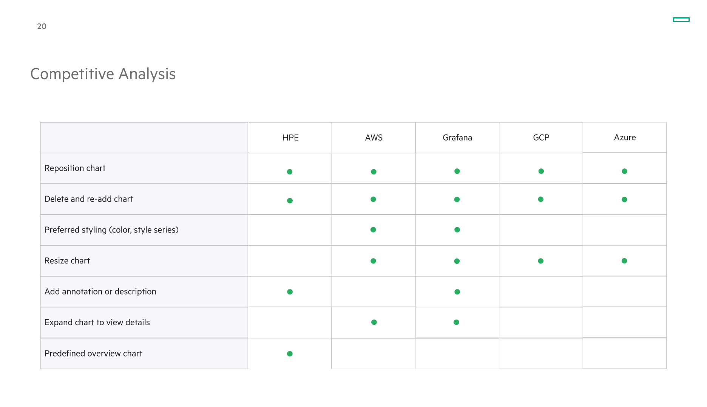
Customization wasn’t one feature — it was a spectrum, from re‑arranging tiles to fine‑tuning a single chart’s color and line weight. Naming that spectrum is what let us scope it instead of trying to build all of it at once.
How might we give users the customization abilities to empower them with their visualizations?
Two structures,
a pile of features
With the research in hand, we split the solution space in two. First the skeleton — how charts should live on a dashboard. Then the features layered on top. We deliberately over‑generated here; the point was to put every plausible direction on the table before critique started cutting.
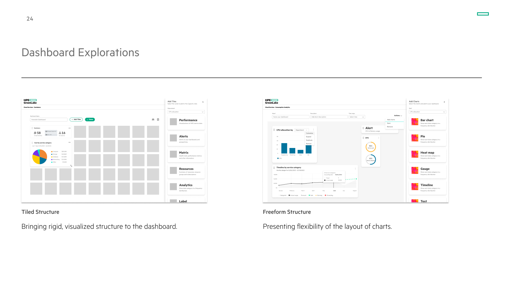
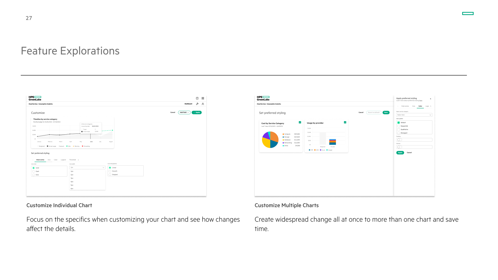
Critique,
narrow, repeat
Every round was anchored by a UX critique and a stakeholder check‑in, and every round was an exercise in subtraction. We walked into the first stakeholder meeting — a product manager, developers, and researchers — with one thing painfully clear:
Too many ideas spark unexpected, innovative solutions — but an overloaded UX overwhelms users and makes the product hard to use.
So before going further, we sat down with our managers and re‑evaluated everything: what to keep, what to cut, and whether to stay on Consumption Analytics at all. The result was a hard line through the feature list.
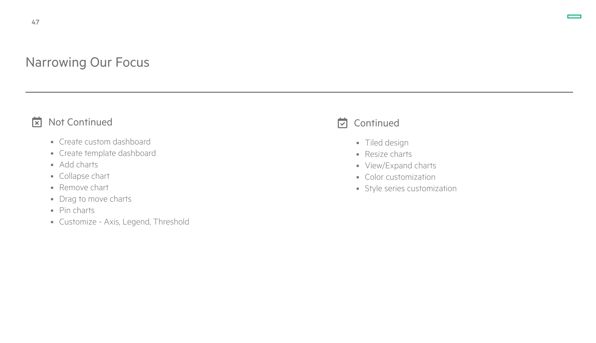
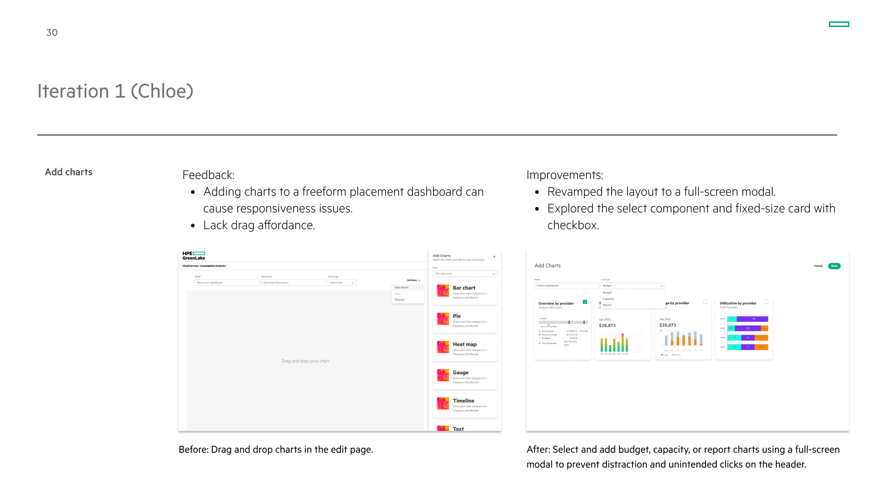
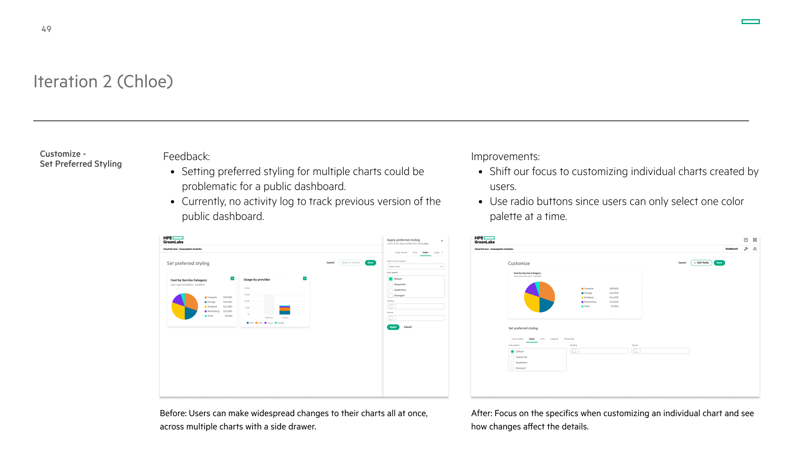
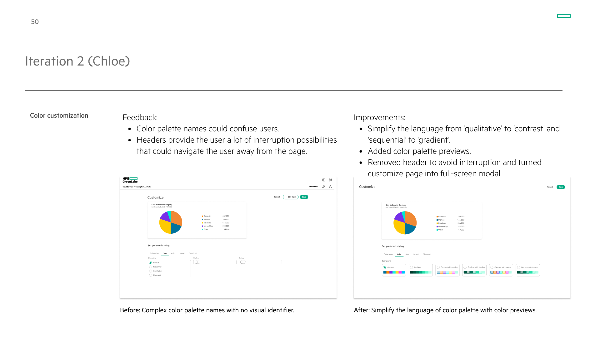
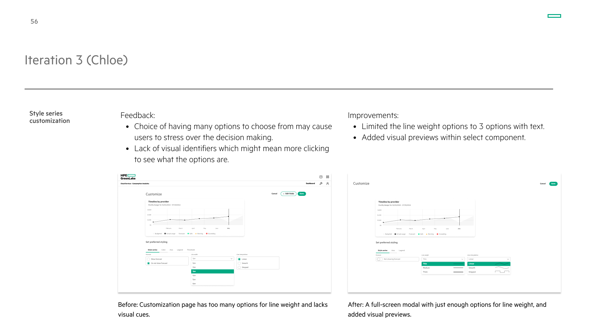
By the third round we hit a real decision — pivot, or stop here. We chose to stay: we’d found more value in depth than breadth, and we’d found the right few things to go deep on.
A modular,
high‑fidelity dashboard
The payoff was a clean Consumption Analytics dashboard where every chart is a tile you can move, resize, expand, and customize — built on the system we’d narrowed our way toward. We demoed it on August 3rd.
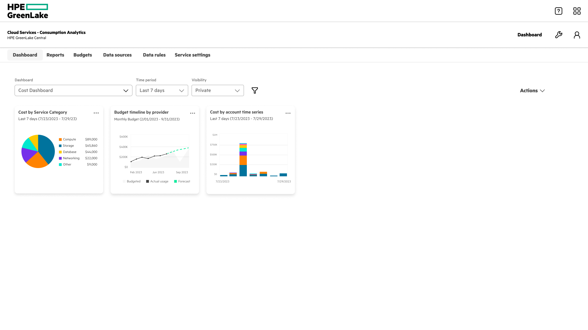
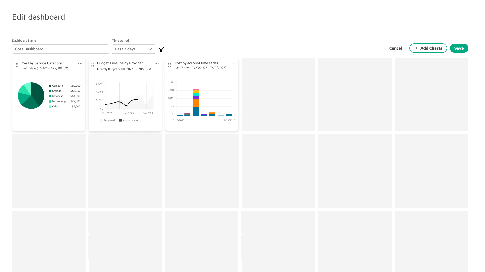
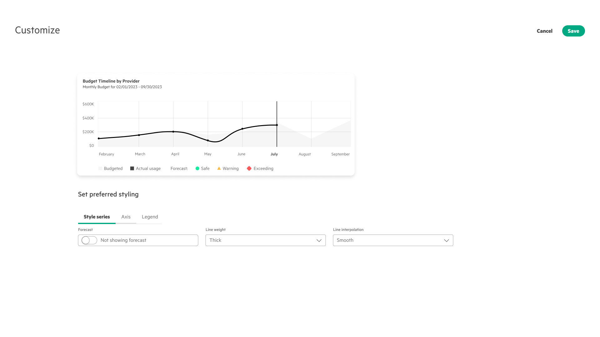
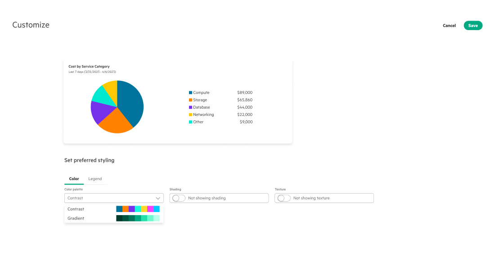
What the summer
added up to
It was an internship, so the honest measure isn’t a launch metric — it’s the quality of the direction we handed back. We turned an open‑ended “let users customize” into a scoped, research‑backed, demoed system.
to a built direction
in user testing
What I Learned
Adhere to the design system. This was my first time working inside a real design system, and there was an enormous amount to absorb — but I saw its value firsthand: a cohesive experience across the whole platform, smoother collaboration between designers, developers, and stakeholders, and a foundation that genuinely scales.
Make strategic tradeoffs. Sitting in UX critiques and stakeholder meetings taught me to make decisions that weigh developer workload, business requirements, and customer preferences all at once — not just what looks best in Figma. Almost every round, the right call was to constrain the options and add a visual cue rather than ship more.
Be bold and agile. Be bold in asking questions and chasing wild explorations to the point of failure — then agile in adapting to the feedback and iterating fast. The strongest move all summer was cutting: a few customization features done well beat a dozen done halfway.
What I’d test next. The directions held up in critique; the next proof is whether they hold up in production. I’d pressure‑test the customization system with real admins on their own data — the part an intern timeline never quite reaches — in the hands of the people who live in this dashboard every day.